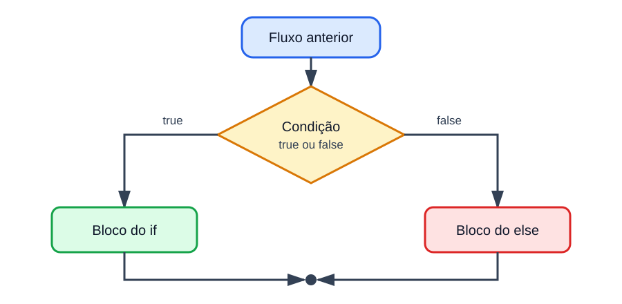

Comparações, lógica booleana, if-else, switch e o operador ternário: o programa deixa de executar tudo e passa a escolher o caminho.
Seção 4 · Aulas 33 a 43
Onde estamos no curso
Da linha reta para a bifurcação
Estrutura
O que faz
Onde
Sequencial
executa tudo em ordem, uma vez
Seção 3
Condicional
escolhe entre caminhos alternativos
Seção 4
Repetitiva
repete um trecho enquanto valer uma condição
Seção 5
Até aqui, toda instrução executava sempre, exatamente uma vez. A partir de agora, algumas instruções podem não executar — e quem decide é uma condição, que vale true ou false.
Na Seção 3, as expressões produziam números. Uma comparação produz true ou false — e esse valor pode ser impresso, guardado em uma variável ou usado para decidir o que o programa executa.
São seis, e todos devolvem boolean
Os operadores de comparação
Operador
Leitura
Exemplo
Resultado
>
maior que
8 > 5
true
<
menor que
8 < 5
false
>=
maior ou igual a
8 >= 8
true
<=
menor ou igual a
7 <= 6
false
==
igual a
4 == 4
true
!=
diferente de
4 != 4
false
A igualdade é ==, com dois sinais. Um = sozinho continua sendo atribuição: quantidade = 10 guarda o 10; quantidade == 10 pergunta se ela vale 10.
Leia a expressão em voz alta
Separe a pergunta da resposta
Expressão
Pergunta feita
Resposta
nota >= 6.0
a nota é pelo menos 6?
true ou false
idade < 18
a idade é menor que 18?
true ou false
numero % 2 == 0
o resto da divisão por 2 é zero?
true ou false
No último exemplo, a aritmética acontece antes da comparação: primeiro numero % 2, depois == 0. O contrário nem compila — em x + (y > 5), não se soma int com boolean.
Tipos diferentes também se comparam
Comparando números e caracteres
int a = 10;
double b = 10.0;
System.out.println(a == b); // true: o 10 vira 10.0 antes
System.out.println(a < 12); // true
System.out.println('A' < 'B'); // true: 65 < 66
System.out.println('a' > 'Z'); // true: 97 > 90
Java promove o tipo menor antes de comparar — a mesma promoção numérica da Seção 3. Um char é comparado pelo seu código Unicode: por isso o 'a' minúsculo é "maior" que o 'Z' maiúsculo.
Onde mora a maior parte dos erros
O operador decide se o limite entra
Bolinha aberta exclui o limite; bolinha fechada inclui. Antes de escolher o operador, leia o requisito: maior que e menos de deixam o 18 de fora; a partir de e no máximo o incluem.
Um double pode guardar uma pequena aproximação. Quando uma tolerância for aceitável, compare a distância entre os valores. Nada de novo aqui: Math.abs é da Seção 3.
String não é um tipo primitivo
Não use == para comparar textos
Scanner sc = new Scanner(System.in);
String resposta = sc.next(); // o usuário digita: sim
System.out.println(resposta == "sim"); // false
Para tipos por referência, como String, o == pergunta se as duas variáveis apontam para o mesmo objeto — e não se os textos têm as mesmas letras. Com dois literais iguais pode até dar true, o que torna o erro ainda mais traiçoeiro.
A comparação de conteúdo fica para quando o curso aprofundar objetos. Nesta seção, as decisões usam números, char e boolean.
Preveja antes de revelar
Teste rápido com int x = 8; e int y = 3;
Expressão
Resultado
x > y
true
x <= 8
true
x == y
false
x != y
true
x % 2 == 0
true
y % 2 != 0
true
Avaliar cada expressão isoladamente, no papel, é o primeiro passo do teste de mesa — antes de a condição ir parar dentro de um if.
Desafio rápido
Qual condição reconhece qualquer número ímpar, inclusive negativo?
n % 2 == 1
n % 2 != 0
n / 2 != 0
RESPOSTA
O resto de um ímpar é 1 ou -1, mas nunca 0. Em Java, o resto tem o sinal do dividendo: -7 % 2 vale -1, e por isso n % 2 == 1 falha nos negativos.
Mão na massa · Bloco 1
Pratique na IDE: expressões comparativas
Guarde em boolean maiorDeIdade o resultado de idade >= 18 e imprima para as idades 17, 18 e 19.
Com int quantidade declarada, escreva boolean temDez = quantidade = 10; Leia o erro e corrija trocando = por ==.
Imprima 10 == 10.0, 'A' < 'B' e 'a' > 'Z'. Depois imprima (int) 'a' e (int) 'Z' para conferir os códigos.
Imprima 0.1 + 0.2 == 0.3. Em seguida, refaça a comparação com Math.abs(...) < 0.000001.
Teste n % 2 == 1 e n % 2 != 0 com 7, -7 e 0. Anote qual das duas acerta todos os casos.
BLOCO 2 DE 7
Expressões lógicas
Combinar e inverter valores boolean
Três operadores, três tabelas-verdade
&& · E lógico
a
b
a && b
false
false
false
false
true
false
true
false
false
true
true
true
|| · OU lógico
a
b
a || b
false
false
false
false
true
true
true
false
true
true
true
true
! · NÃO lógico
a
!a
false
true
true
false
&& só dá true quando as duas partes são true. || só dá false quando as duas são false. ! inverte — e, em !(idade >= 18), os parênteses mostram o que está sendo negado.
Perguntas simples viram perguntas completas
Dentro e fora do intervalo de 0 a 10
&& · todas precisam valer
double nota = 7.5;
boolean notaValida =
nota >= 0.0 && nota <= 10.0;
// true && true → true
|| · uma basta
double nota = 12.0;
boolean foraDoIntervalo =
nota < 0.0 || nota > 10.0;
// false || true → true
Java não aceita a notação da matemática 0 <= nota <= 10: 0 <= nota já vira boolean, e boolean não se compara com 10. É preciso repetir a variável: nota >= 0 && nota <= 10.
O && estreita; o || alarga
Intervalos na reta numérica
Traduza antes de revelar
Do requisito para a condição
Requisito
Expressão Java
idade entre 18 e 65, inclusive
idade >= 18 && idade <= 65
temperatura abaixo de 10 ou acima de 35
temperatura < 10 || temperatura > 35
número não é zero
numero != 0
número é par e positivo
numero % 2 == 0 && numero > 0
não está aprovado
!aprovado
Escreva primeiro cada pergunta simples. Depois escolha o conector: && quando todas precisam valer, || quando uma delas basta.
No || é igual, ao contrário: se a 1ª parte é true, o resultado já é true e a 2ª não é avaliada.
Duas formas de perder a proteção
A divisão por zero volta
Proteção na ordem errada
int divisor = 0;
boolean ok = 10 / divisor > 2
&& divisor != 0;
// ArithmeticException: / by zero
& no lugar de &&
int divisor = 0;
boolean ok = divisor != 0
& 10 / divisor > 2;
// ArithmeticException: / by zero
Coloque primeiro a condição que protege a segunda. E prefira && e ||: com boolean, & e | dão o mesmo resultado lógico, mas avaliam sempre as duas partes.
& e | entre números são operadores bitwise — assunto da Seção 6.
Mesmo quando não são obrigatórios, os parênteses mostram como a regra foi pensada. Use-os.
Negar um intervalo
Inverta a comparação e troque o conector
boolean dentro = idade >= 18 && idade <= 65;
boolean fora = idade < 18 || idade > 65; // o oposto exato
Esta negação
equivale a
!(a && b)
!a || !b
!(a || b)
!a && !b
Não precisa decorar a regra: teste valores antes, sobre e depois de cada limite, e confira se a condição responde à pergunta certa.
Um valor no meio do intervalo não basta
Teste de mesa de idade >= 18 && idade <= 65
idade
idade >= 18
idade <= 65
Resultado
17
false
true
false
18
true
true
true
65
true
true
true
66
true
false
false
Antes do limite, sobre o limite e depois dele: é assim que se descobre, rapidinho, um > que deveria ser >=.
Desafio rápido
Quanto vale true || false && false?
true
false
Não compila
RESPOSTA
O && vem antes do ||: a expressão é true || (false && false). O lado esquerdo do || já é true, então o resultado é true.
Mão na massa · Bloco 2
Pratique na IDE: expressões lógicas
Imprima as quatro combinações de true e false com && e com ||. Monte as duas tabelas-verdade no caderno.
Escreva boolean notaValida para uma nota de 0 a 10 e teste com -1, 0, 10 e 11.
Tente escrever 0 <= nota <= 10. Leia o erro e reescreva a condição com &&.
Com int divisor = 0;, avalie divisor != 0 && 10 / divisor > 2. Depois inverta a ordem das partes e, por fim, troque && por &. Anote quando aparece a ArithmeticException.
Escreva "fora do intervalo de 18 a 65" com !(...) e sem !. Confira as duas versões com 17, 18, 65 e 66.
BLOCO 3 DE 7
Estrutura condicional if-else
A sequência ganha uma bifurcação
O programa passa a escolher um caminho

Só um dos dois blocos executa. Depois deles, os caminhos se reencontram e a execução segue normalmente.
int quantidade = 3;
if (quantidade) { } // erroif (quantidade > 0) { // ok
System.out.println("Ha itens.");
}
Se a condição for false, o bloco entre chaves é ignorado e a execução continua depois do if. E Java não converte 0 em false nem outros inteiros em true, como fazem C e JavaScript: a condição tem de ser boolean.
Exatamente um dos dois
if-else: escolher entre dois caminhos
double nota = 7.0;
if (nota >= 6.0) {
System.out.println("Aprovado");
} else {
System.out.println("Reprovado");
}
nota
nota >= 6.0
Saída
8.0
true
Aprovado
6.0
true
Aprovado
5.9
false
Reprovado
O else não recebe condição: ele significa "caso contrário". Repare no 6.0, exatamente no limite — um teste de mesa sempre inclui os limites.
De cima para baixo, o primeiro true vence
Encadeamento com else if
double nota = 7.5;
if (nota >= 9.0) {System.out.println("Conceito A");} else if (nota >= 7.0) {System.out.println("Conceito B");} else if (nota >= 6.0) {System.out.println("Conceito C");} else {System.out.println("Conceito D");}
Escolha a nota
Saída
escolha uma nota
Preveja a saída antes de clicar.
A condição mais ampla esconde as outras
A ordem das condições importa
double nota = 9.5;
if (nota >= 6.0) {
System.out.println("Conceito C ou melhor");
} else if (nota >= 9.0) {
System.out.println("Conceito A"); // nunca é alcançado
}
Toda nota que passa em nota >= 9.0 já passou em nota >= 6.0 — e, na cadeia, só o primeiro true executa. Em classificações por limite, vá do maior para o menor, ou escreva os intervalos completos.
Nem toda decisão é uma cadeia
Dois if separados podem executar juntos
int numero = 6;
if (numero > 0) {
System.out.println("Positivo");
}
if (numero % 2 == 0) {
System.out.println("Par");
}
O que aparece no console
Positivo
Par
"Positivo" e "par" são características independentes, e as duas perguntas precisam ser feitas. Use else if só quando os caminhos forem alternativas que se excluem.
Um if dentro do outro
Aninhar ou combinar com &&?
Aninhado: preserva o motivo
if (nota >= 6.0) {
if (faltas <= 5) {
System.out.println("Aprovado");
} else {
System.out.println("Reprovado por faltas");
}
} else {
System.out.println("Reprovado por nota");
}
Aninhe apenas quando a segunda pergunta depende da primeira. Se só interessa saber se as duas exigências foram atendidas, a condição composta é mais simples.
A indentação não muda a execução
Use chaves, mesmo com uma linha só
O que parece
if (saldo < 0)
System.out.println("Saldo negativo");
System.out.println("Verifique a conta");
O que o Java entende
if (saldo < 0) {
System.out.println("Saldo negativo");
}
System.out.println("Verifique a conta");
Sem chaves, só a primeira instrução pertence ao if; a segunda executa sempre. Durante o curso, mantenha as chaves: elas evitam o erro quando alguém acrescenta mais uma linha depois.
Juntando entrada, condição e saída
Sinal e paridade de um número
Leitura e 1ª decisão: o sinal
Scanner sc = new Scanner(System.in);
System.out.print("Digite um numero inteiro: ");
int numero = sc.nextInt();
if (numero > 0) {
System.out.println("Positivo");
} else if (numero < 0) {
System.out.println("Negativo");
} else {
System.out.println("Zero");
}
Duas decisões independentes: uma cadeia para o sinal, um if-else para a paridade. Zero é par, porque 0 % 2 vale 0.
Só o caminho percorrido entra na tabela
Teste de mesa com if-else
int x = 10;
int y = 4;
if (x > y) {
x = x - y;
} else {
y = y - x;
}
System.out.println(x + " " + y);
Etapa
x
y
valores iniciais
10
4
x > y → true
10
4
bloco do if: x = 10 - 4
6
4
saída: 6 4
6
4
O bloco do else não executa, então não aparece na tabela: o teste de mesa registra somente o caminho percorrido.
Desafio rápido
O que este trecho imprime?
int x = 3;
if (x > 10); {
System.out.println("Maior que 10");
}
Nada
Maior que 10
Não compila
RESPOSTA
O ; depois da condição é uma instrução vazia, e é ela que o if controla. O bloco entre chaves é independente e executa sempre: imprime Maior que 10.
Desafio rápido
E este, o que imprime?
int x = 5;
if (x > 10)
if (x > 20)
System.out.println("A");
else
System.out.println("B");
B
Nada
A
RESPOSTA
O else pertence ao if sem else mais próximo — o de dentro. Como x > 10 é false, nada é impresso. Com chaves, a dúvida nem existiria.
Mão na massa · Bloco 3
Pratique na IDE: if, else if e else
Leia uma nota e imprima "Aprovado" ou "Reprovado". Teste com 5.9, 6.0 e 6.1.
Classifique a nota nos conceitos A, B, C e D com else if. Depois coloque nota >= 6.0 como primeira condição e descubra qual conceito deixa de aparecer.
Escreva o programa do sinal e da paridade e teste com 7, -4 e 0.
Escreva um if sem chaves com duas linhas indentadas embaixo. Execute com a condição falsa e explique a saída.
Faça no papel o teste de mesa do trecho com x = 10 e y = 4. Repita com x = 3 e y = 8 e confira executando.
BLOCO 4 DE 7
Operadores de atribuição cumulativa
A variável recebe um valor calculado a partir dela mesma
Multiplicar por 0.90 mantém 90% do preço — e, portanto, retira 10%. Multiplicar por 0.10 deixaria só o valor do desconto.
Não é só uma abreviação
A forma cumulativa embute um casting
Compila de um jeito, não do outro
short quantidade = 5;
quantidade += 1; // compila
quantidade = quantidade + 1; // erro// o += equivale, na verdade, a:
quantidade = (short) (quantidade + 1);
E o casting estoura calado
byte valor = 127;
valor += 1;
System.out.println(valor);
// -128
Em uma operação aritmética, byte e short viram int — a promoção numérica da Seção 3. A forma cumulativa converte o resultado de volta sem avisar: ela não torna a operação mais segura.
int a = 5;
int b = a++; // b = 5; depois a = 6int c = 5;
int d = ++c; // c = 6; depois d = 6
x++ produz o valor antigo e depois soma 1; ++x soma 1 e produz o valor novo. Sozinhos em uma linha, os dois dão no mesmo. A diferença só aparece quando o valor é usado na mesma expressão — e é aí que a certificação arma as pegadinhas.
Enquanto o assunto é novo, uma atualização por linha: o código e o teste de mesa ficam muito mais claros.
O saldo -= saque só é alcançado depois que a condição confirma que o valor é positivo e cabe no saldo.
Desafio rápido
O que este trecho imprime?
byte b = 10;
b *= 30;
System.out.println(b);
300
44
Não compila
RESPOSTA
b *= 30 equivale a b = (byte) (b * 30). O produto é 300, e o casting para byte descarta os bits que não cabem: sobra 44.
Mão na massa · Bloco 4
Pratique na IDE: atribuição cumulativa
Parta de double saldo = 1000.0; e aplique um depósito, um saque e um acréscimo de 1% com +=, -= e *=, imprimindo o saldo depois de cada passo.
Com short quantidade = 5;, escreva quantidade = quantidade + 1; Leia o erro, troque por quantidade += 1; e explique por que agora compila.
Com byte valor = 127;, execute valor += 1; e imprima. Explique o resultado negativo.
Com int x = 5;, execute int y = x++; e depois int z = ++x; Imprima x, y e z e explique cada valor.
Escreva o programa do saque e teste um valor válido, um maior que o saldo e um negativo.
BLOCO 5 DE 7
Estrutura switch-case
Uma variável, vários valores exatos
O switch organiza a decisão pelo valor
Com if-else
if (dia == 1) {
System.out.println("Domingo");
} else if (dia == 2) {
System.out.println("Segunda-feira");
} else if (dia == 3) {
System.out.println("Terca-feira");
} else {
System.out.println("Dia invalido");
}
Com switch
switch (dia) {
case 1:
System.out.println("Domingo");
break;
case 2:
System.out.println("Segunda-feira");
break;
case 3:
System.out.println("Terca-feira");
break;
default:
System.out.println("Dia invalido");
break;
}
Passo a passo
Como o switch executa
Java avalia a expressão entre parênteses — no exemplo, dia.
Procura um case com o mesmo valor.
Começa a executar a partir desse ponto.
O break encerra o switch.
Se nenhum caso combinar, executa o default.
O default é opcional, mas vale a pena: é ele que trata entradas inválidas e valores que ninguém previu.
O case marca onde começa, não onde termina
Sem break, a execução continua
int opcao = 1;
switch (opcao) {
case 1:System.out.println("Cadastrar");case 2:System.out.println("Consultar");default:System.out.println("Sair");
}
Esse comportamento se chama fall-through. Enquanto o conteúdo é novo, termine cada alternativa com break.
Escolha a opção
Saída
escolha uma opção
Preveja a saída antes de clicar.
Fall-through de propósito
Vários valores, o mesmo bloco
switch (mes) {
case 1:
case 2:
case 3:
System.out.println("Primeiro trimestre");
break;
case 4:
case 5:
case 6:
System.out.println("Segundo trimestre");
break;
default:
System.out.println("Mes fora do exemplo");
break;
}
Os casos 1 e 2 não têm instruções nem break.
Eles apenas encaminham a execução para o bloco do caso 3.
O mesmo vale para 4 e 5, que caem no bloco do 6.
Aqui, a ausência de break é intencional — e o agrupamento deixa isso visível para quem lê.
O que pode entrar no switch
Seletores e rótulos
Tipos usados no curso
int e os inteiros menores
char
String
long, float, double e boolean não servem como seletor do switch.
Cada case é um valor constante
switch (conceito) {
case'A':
System.out.println("Excelente");
break;
case'B':
System.out.println("Bom");
break;
}
// case nota >= 6.0: não compila
Um case não recebe comparação: ele recebe um valor fixo, compatível com o tipo do seletor. Para intervalos e condições compostas, continue no if-else.
Java moderno, só para reconhecimento
A sintaxe com setas
switch (dia) {
case 1 -> System.out.println("Domingo");
case 2 -> System.out.println("Segunda-feira");
case 3 -> System.out.println("Terca-feira");
default -> System.out.println("Dia invalido");
}
Com ->, cada caso executa só a sua instrução: não há break nem fall-through.
O curso começa pela forma tradicional porque ela aparece em muito código — e porque entender o break vai ser útil nas estruturas repetitivas.
A escolha deve favorecer a leitura
switch ou if-else?
Situação
Estrutura mais direta
comparar uma variável com valores exatos
switch
testar faixas, como nota >= 6
if-else
combinar condições com && e ||
if-else
ter apenas dois caminhos simples
normalmente if-else
montar um menu numérico
switch
O menu já foi impresso e a opção, lida com nextInt()
Um menu com switch
switch (opcao) {
case 1: {
System.out.print("Digite dois numeros: ");
double a = sc.nextDouble();
double b = sc.nextDouble();
System.out.println("Soma: " + (a + b));
break;
}
case 2: {
System.out.print("Digite um numero: ");
double numero = sc.nextDouble();
System.out.println("Dobro: " + (numero * 2));
break;
}
default: {
System.out.println("Opcao invalida.");
break;
}
}
Uma execução
1 - Somar dois numeros
2 - Calcular o dobro
Opcao: 2
Digite um numero: 7
Dobro: 14.0
As chaves de cada case fazem a, b e numero existirem só dentro do seu caso. Esse é o assunto do Bloco 7.
Desafio rápido
O que é impresso com opcao = 5?
switch (opcao) {
case 1:
System.out.print("A");
default:
System.out.print("D");
case 2:
System.out.print("B");
break;
case 3:
System.out.print("C");
}
D
DB
DBC
RESPOSTA
Nenhum case vale 5: a execução começa no default, onde quer que ele esteja. Sem break, ela cai no case 2, imprime B e para no break. Saída: DB.
Mão na massa · Bloco 5
Pratique na IDE: switch-case
Escreva o switch dos dias da semana, de 1 a 7, com default para valores inválidos.
Remova todos os break e execute com dia = 2. Anote o que foi impresso e explique.
Agrupe os meses de 1 a 12 em trimestres usando casos sem instruções.
Tente escrever case nota >= 6.0: e leia o erro. Resolva o mesmo problema com if-else.
Monte o menu com as opções de soma e dobro. Depois reescreva o mesmo switch com a sintaxe de setas.
BLOCO 6 DE 7
Expressão condicional ternária
O único operador de Java com três partes
Uma condição, dois valores possíveis
condicao ? valorSeVerdadeiro : valorSeFalso
double nota = 7.5;
String resultado =
nota >= 6.0 ? "Aprovado" : "Reprovado";
System.out.println(resultado); // Aprovado
As duas versões produzem o mesmo valor. A diferença: o if-else é uma instrução; o ternário é uma expressão — produz um valor e pode participar diretamente de uma atribuição.
Como toda expressão
Tem um tipo — e só um lado é calculado
O resultado tem um tipo
double valor = true ? 10 : 2.5;
// 10.0: o 10 é promovido a doubleint erro = true ? 10 : 2.5;
// erro: o resultado é double
Só o lado escolhido é avaliado
int divisor = 0;
int resultado =
divisor != 0 ? 10 / divisor : 0;
System.out.println(resultado); // 0
Escolha resultados do mesmo tipo sempre que possível. E, como no curto-circuito do &&, o lado que não foi escolhido nem chega a ser calculado: a divisão por zero nunca acontece.
Uma escrita menor não é automaticamente uma escrita melhor. No if-else, cada caminho aparece na sua própria linha.
Preveja cada linha antes de revelar
Teste de mesa com o ternário
int quantidade = 8;
double precoUnitario =
quantidade >= 10 ? 4.50 : 5.00;
double total =
quantidade * precoUnitario;
Etapa
Resultado
quantidade >= 10
false
valor escolhido
5.00
precoUnitario
5.00
total
40.00
Com quantidade = 10, a condição seria true: preço 4.50 e total 45.00. O 10 entra, porque o operador é >=.
Desafio rápido
Qual destas linhas não compila?
double v = true ? 10 : 2.5;
int v = true ? 10 : 2.5;
String s = 3 > 2 ? "sim" : "nao";
RESPOSTA
Com um lado int e outro double, o ternário produz double — e double não cabe em int sem casting. O tipo é decidido na compilação: não importa que a condição seja true.
Mão na massa · Bloco 6
Pratique na IDE: o operador ternário
Reescreva com ternário o if-else que escolhe entre "Aprovado" e "Reprovado". Compare as duas versões.
Imprima direto no println se um número é "Par" ou "Impar", usando o ternário.
Escreva int erro = true ? 10 : 2.5; Leia a mensagem e corrija o tipo da variável.
Com int divisor = 0;, calcule divisor != 0 ? 10 / divisor : 0 e confirme que não há exceção.
Escreva a classificação em A, B e C com ternário aninhado e depois com else if. Qual das duas você prefere ler?
BLOCO 7 DE 7
Escopo e inicialização
Onde um nome pode ser usado
Cada par de chaves cria um escopo
bloco do main
int idade = 20;
if (idade >= 18) {
bloco do if
String mensagem = "Maior de idade";
System.out.println(mensagem); // ok
System.out.println(idade); // ok: vem de fora
}
System.out.println(mensagem); // erro
O modelo prático
a variável existe a partir da sua declaração
vale até o fim do bloco em que foi declarada
blocos internos enxergam os externos
ao sair do bloco, o nome deixa de existir
idade nasceu fora do if: vale dentro e depois dele. mensagem nasceu no bloco do if e só existe ali.
Quando pode e quando não pode
O mesmo nome em dois lugares
Escopos sobrepostos: não pode
int valor = 10;
if (valor > 0) {
// int valor = 20; erro: já existe
valor = 20; // ok: só atribui
}
Escopos separados: pode
if (numero >= 0) {
int resultado = numero * 2;
System.out.println(resultado);
} else {
int resultado = numero * -1;
System.out.println(resultado);
}
Java proíbe duas variáveis locais com o mesmo nome em escopos que se sobrepõem. Os blocos do if e do else não se sobrepõem: as duas declarações de resultado convivem — e nenhuma existe depois da estrutura.
Declarar não é inicializar
O compilador examina todos os caminhos
int idade = 20;
String categoria;
if (idade >= 18) {
categoria = "adulto";
}
System.out.println(categoria); // erro
Uma variável local precisa estar definitivamente inicializada antes da leitura: variable categoria might not have been initialized. O compilador olha a estrutura, não os valores — mesmo com idade = 20, sem else existe um caminho em que categoria fica sem valor.
Duas correções possíveis
Garanta um valor em todo caminho
Um valor em cada caminho
String categoria;
if (idade >= 18) {
categoria = "adulto";
} else {
categoria = "menor";
}
System.out.println(categoria); // ok
Um valor inicial verdadeiro
String categoria = "menor";
if (idade >= 18) {
categoria = "adulto";
}
System.out.println(categoria); // ok
Só dê um valor inicial quando ele for verdadeiro para o problema. Um -1 inventado só para calar o compilador esconde um erro de fluxo.
Todos os case dividem o mesmo bloco
Escopo dentro do switch
switch (opcao) {
case 1: {
int valor = 10;
System.out.println(valor);
break;
}
case 2: {
int valor = 20; // outro bloco
System.out.println(valor);
break;
}
}
Na forma tradicional, todos os case ficam no mesmo bloco do switch. Sem as chaves extras, o valor do caso 1 continuaria em escopo no caso 2 — e o segundo int valor não compilaria.
Para quem está começando, um bloco por caso evita a confusão — foi o que o menu do Bloco 5 fez.
percentual é declarado antes da estrutura porque é usado depois dela. Como a cadeia termina em else, todo caminho atribui um valor — e o compilador sabe disso.
Desafio rápido
O que acontece?
int x = 3;
int resultado;
if (x > 0) {
resultado = 1;
}
System.out.println(resultado);
Imprime 1
Imprime 0
Não compila
RESPOSTA
Não compila. Existe um caminho — a condição falsa — em que resultado não recebe valor, e o compilador analisa a estrutura, não o valor de x.
Declare uma variável dentro de um if e tente usá-la depois do bloco. Leia o erro e corrija movendo a declaração para antes do if.
Dentro de um if, redeclare uma variável do main com o mesmo nome. Depois troque a declaração por uma simples atribuição.
Declare String categoria;, atribua valor só dentro de um if e tente imprimir. Corrija de duas formas: com else e com um valor inicial.
Declare int valor em dois case de um switch, primeiro sem chaves extras e depois com chaves. Compare as mensagens.
Escreva o reajuste de salário, faça o teste de mesa para 1500, 2000, 4000 e 8000 e depois apague o else final para ver o erro de inicialização.
Os erros que mais aparecem
Antes de pedir ajuda, confira isto
Sintoma
Causa provável
int cannot be converted to boolean
= no lugar de ==, ou uma condição que não é boolean
O bloco executa com a condição falsa
; logo depois do if, ou if sem chaves
Uma faixa da classificação nunca aparece
a condição mais ampla veio antes da mais específica
O switch imprime vários casos
faltou break — é o fall-through
might not have been initialized
existe um caminho que não atribui valor à variável
cannot be resolved to a variable
a variável foi usada fora do bloco em que nasceu
Cuidado com o primeiro: com boolean, if (aprovado = true)compila — e entra sempre, porque a atribuição vale true.
Comparando as alternativas
Qual estrutura usar?
Situação
Estrutura
executar algo só quando a condição vale
if
escolher entre dois caminhos
if-else
várias faixas ou condições compostas
if · else if · else
uma variável comparada com valores exatos
switch
escolher entre dois valores
ternário ? :
Fechando a Seção 4
O que você já é capaz de fazer
Prever o resultado de comparações e expressões lógicas, inclusive com curto-circuito
Controlar o fluxo com if, else if e else, sem faixas sobrepostas
Atualizar variáveis com +=, -=, ++ e --, sabendo do casting embutido
Usar switch com break e reconhecer o fall-through
Escolher entre dois valores com o operador ternário
Garantir escopo e inicialização antes de usar uma variável
De olho na certificação
Esta seção cai quase inteira na prova
Comparações, operadores lógicos e curto-circuito, if-else, switch com fall-through, atribuição cumulativa com casting embutido, pré e pós-incremento, ternário, escopo e inicialização de variáveis locais: tudo isso é cobrado no 1Z0-831. O material A8 traz dez questões no estilo da prova.
A próxima seção traz as estruturas repetitivas — while, for e do-while — e começa pela depuração passo a passo no Eclipse.
Perguntas?
Seção 4 — Estrutura condicional
← → navegar · Espaço avança · Esc visão geral · F tela cheia